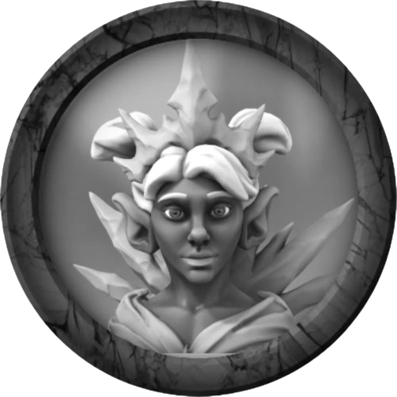
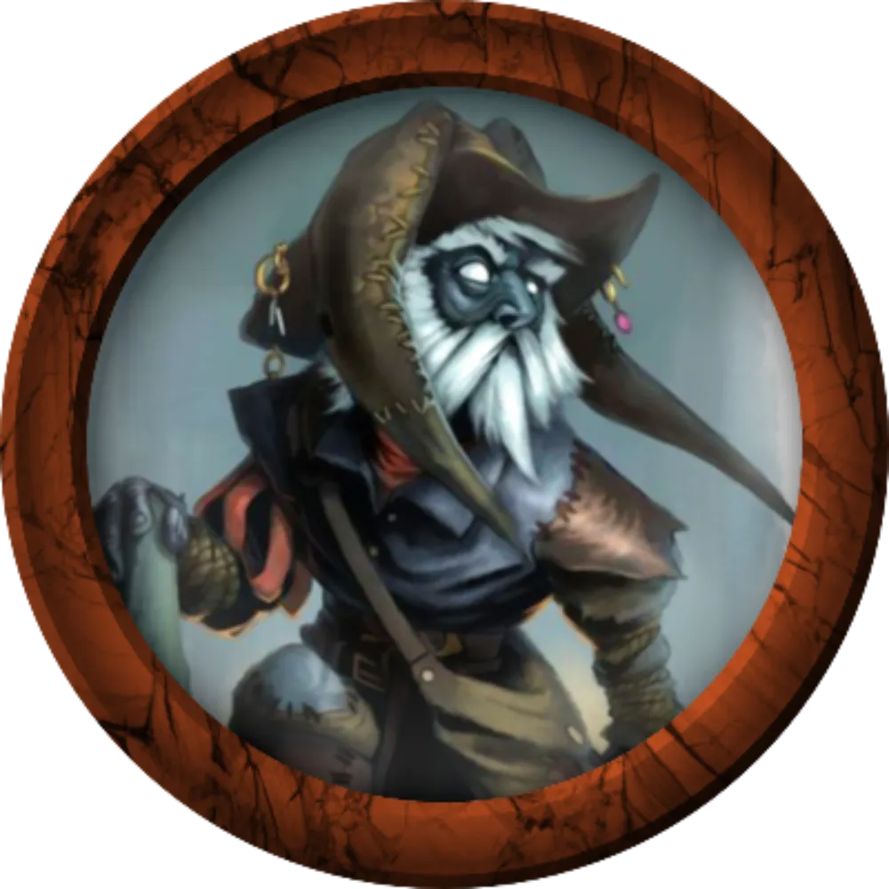
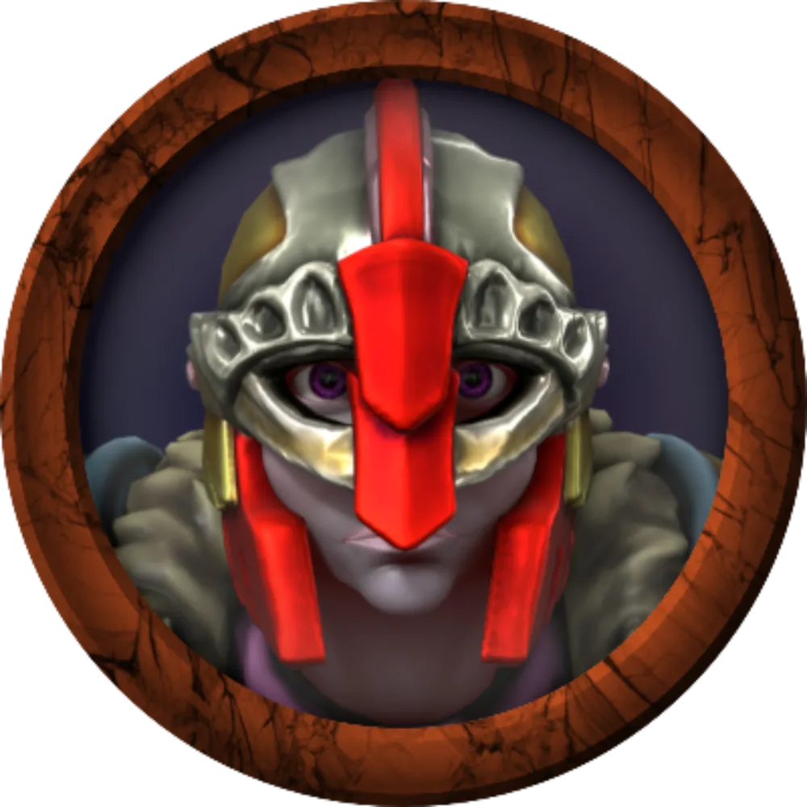
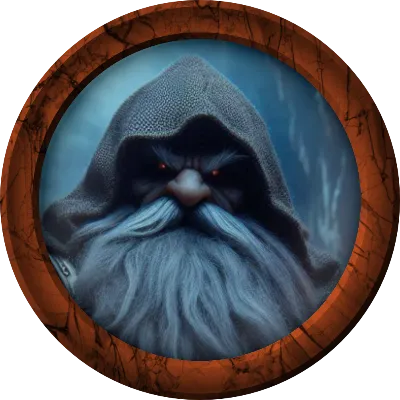
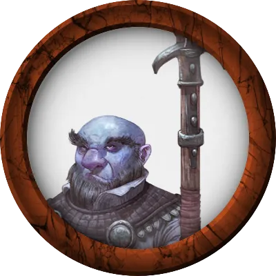
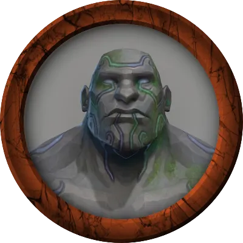
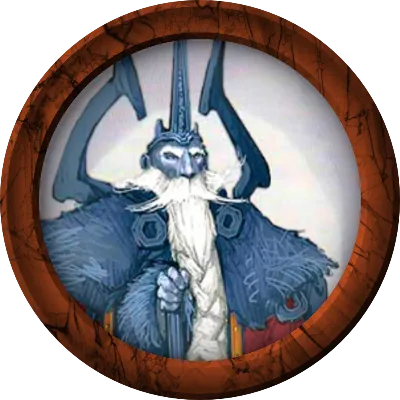
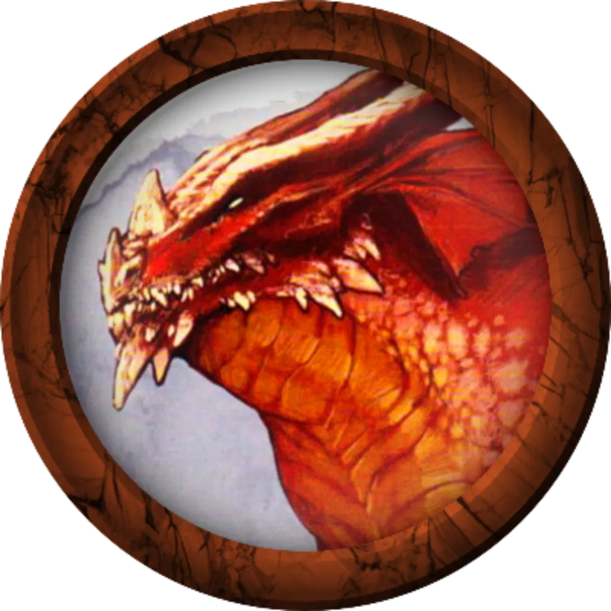
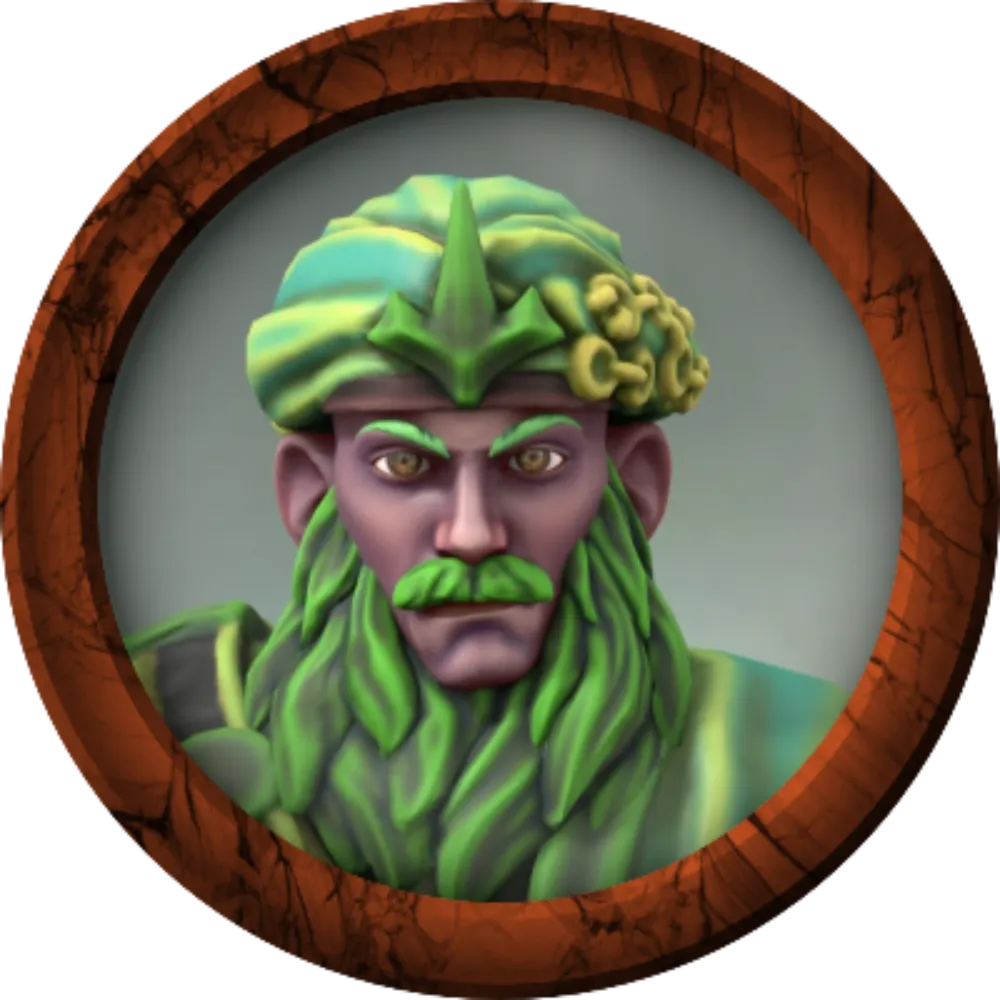
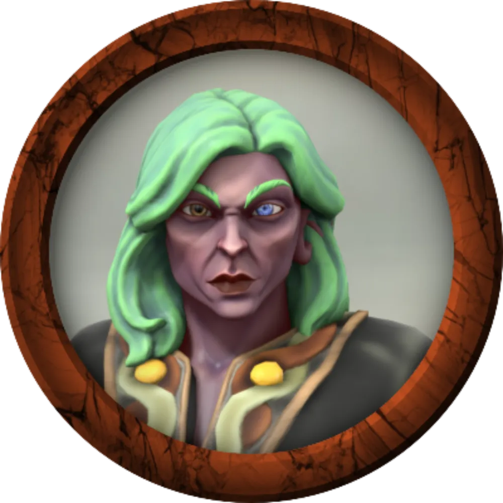

Gracklstugh (pronuncia-se GRACS-TUG), é uma cidade duergar às margens do Lago Negro, na Underdark.
A cidade fica a cerca de 243km de Menzoberranzan, do outro lado do Lago
Negro.
O acesso a Gracklstugh pode ser alcançado pelo Lago Negro.
Gracklstugh is uma cidade caverna anexada ao Lago negro como um porto subterrâneo. A cidade é iluminada pela luz do fogo de fundições misturadas entre estalagmites. O ar cheira acre e é carregado de sons industriais: fogo, vapor e ferro zumbindo. A fumaça persistente que preenche a caverna pode causar uma tosse persistente, e às vezes fatal, conhecida como Pulmão de Grackle.
A cidade é principalmente lar de duergars, mas há uma minoria considerável
de derros que vivem lá, assim como vários durzagon, orogs e gigantes de pedra. Um terço da população total é
composto por escravos, nomeadamente goblins, anões do escudo, orcs, svirfneblin e humanos.
A cidade recebia muitos mercadores visitantes, especialmente drow, duergar e kuo-toa. Estrangeiros são
obrigados a obter mandados de passagem para atravessar a cidade (além do distrito dos cais) and seus
territórios. Um forasteiro que adentre Gracklstugh, só consegue sair pacificamente se alguém o conceder
permissão oficial.
Grupos só tem permissão para sair caso fundem uma guilda oficialmente.

Duergar mercadora que trazia itens especiais à Gracklstugh. Foi morta por Sarith Kzekarit sob efeito de fungos demoníacos de Zuggtmoy. Estava sempre acompanhada de seu Elemental de Pedra, que após a morte de sua aliada, passa a proteger Vaal magicamente.

Derro mensageiro excêntrico, está sendo investigado por Errde Crânio Negro. É frequentemente visto correndo em velocidade alarmante pela cidade enquanto murmura algo para si mesmo em tom de reprovação.

Capitã Errde Crânio Negro, comandante da Guarda de Pedra. Trata Vaal com respeito ímpar, enquanto subestima Atena e vê os demais como possíveis escravos valorosos. Recentemente, Errde Crânio Negro tem achado que uma CONSPIRAÇÃO SECRETA está se instaurando na Cidade das Lâminas.

Duergar líder dos Guardiões da Chama, conselheiro direto de Themberchaud e irmão de Gorglak.

Faz parte dos Guargas de Pedra, a milícia de menor patente em Gracklstugh. É um duergar guardião da chama, irmão de Gartokkar, com corrupção exarcebada.

O líder dos gigantes de pedra é um sacerdote de Skoraeus Ossos de Pedra, o deus de seu povo. Hgraam é sábio e bem informado, além de demonstrar grande gratidão pela ajuda que os aventureiros deram a ele quando teve de lidar com um gigante bicéfalo enlouquecido. Envergonhado pelo ocorrido, convidou os aventureiros a uma reunião.

Um governante impiedoso e astuto. Existem diversas especulações a respeito de suas ações, mas ninguém sabe com precisão.

Este dragão vermelho adulto mantém as fundidoras e forjas da cidade acesas, recebendo tesouros, refeições e constantes regalias em troca.

Mercador Duergar, patriarca líder do clã Barão de Sal.

Uma duergar membro do Conselho Mercantil. Ela é uma mestra de caravana hábil e orgulha-se de sempre chegar ao seu destino antes do combinado.
A seguir, seres que passaram missões ao grupo.
Themberchaud ordenou que os aventureiros seguissem as ordens dos Guardiões da Chama, mas que relatassem a ele primeiro e não aos guardiões.
Errde Crânio Negro acredita que uma CONSPIRAÇÃO está se infiltrando entre as pessoas de Gracklstugh. Ela recompensará os aventureiros se trouxerem evidências dessas CONSPIRAÇÕES para ela.prometeu solicitar ao Horgar Sombra de Aço V, O Rei das Profundezas passagem dos aventureiros para fora de Gracklstugh, desde que eles.
Errde Crânio Negro quer que os aventureiros sigam Droki, vejam o que ele faz e aonde vai, e reportem a ela. Ou, caso vejam uma oportunidade, capturam-no e tragam-no para interrogatório ou matem-no e lhe tragam evidências de suas atividades..
Ylsa Henstak é a única habitante de Gracklstugh com ítens da superfície. Ou ao menos costumava ser. Os derros recentemente estão utilizando dinheiro e joias da superfície para pagar por comida.
Hgraam Orador de Pedra, após o incidente do gigante bicéfalo, convidou os aventureiros para uma reunião.